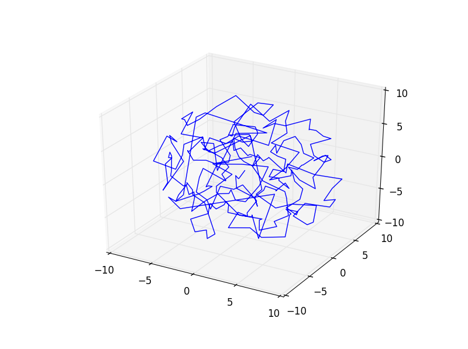

Game of Life
This program was a project for my Object Oriented Programming Class. I used C++ to emulate Conway's Game of Life. It was one of my first encounters with Object Oriented Design.
Link to ProjectOscar Winner Binary Search Tree Implementaiton
This program was a project for my Object Oriented Programming Class. I used C++ to create a binary search tree that contains data for the oscar winners since the awards were created.
Description:Demonstrates a binary search tree. Contains two BSTs, one of actors, on of pictures. Both BSTs are sorted by name. Allows user to sort by any field, and search by any string field. Allows user to call another search until the user is satisfied. Also creates reports and prints either to string or file. Can convert the BST back into a .csv file. Allows user to add, sort, or modify records.
Link to Project
Greedy Star Chart
This program was a project for my Algorithms Class (Spring 2018). I used Python to find a greedy route between nearest stars using astronomical data. Essentially a 3D greedy solution to the travelling salesman problem
Description: We are trying to demonstrate how a greedy algorithm to find a route between stars in a radius surrounding earth is an effective way of determining a “good” (not necessarily perfect) route between the stars. To do this, we are going to take an online database of stars (the HYG or Hippocarcos, Yale, Gliese database), which is in CSV format. We will read in this data and design a traversal algorithm using the greedy principle of using locally available data to find the optimal solution in that case.
Link to ProjectPortscanner w/GUI
This program was my final project for my Cybersecurity Programming and Analysis Class (Fall 2018). I worked with a partner and together we developed a basic port scanner, created a GUI interface, and also imported data from the CVE database to identify possible security vulnerabilities based on which ports were open
Description:
About:
The Advanced Port Scanner helps analyze the users system for potential vulnerabilities by getting an IP and scanning the ports within a user defined range. The program is built using Python.
Usage:
Type in the name of the IP address that you want to scan. Typically, on a local system you would want to just type in localhost.
Choose the starting port and ending port that you would want to scan.
Click the submit button or press enter
Wait for the process to finish
The output will show in a list to the side
Clicking on a line in the list will bring up the respective information for that port, including its usage and vulnerability information.